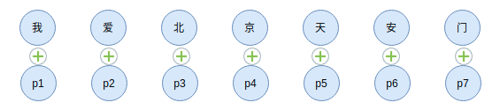
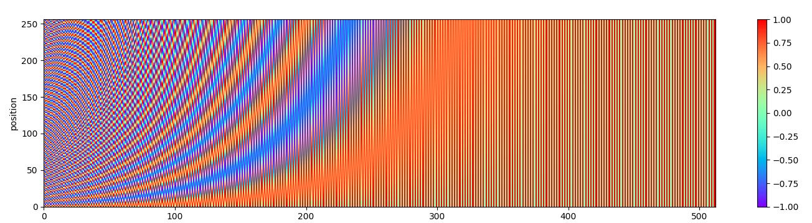
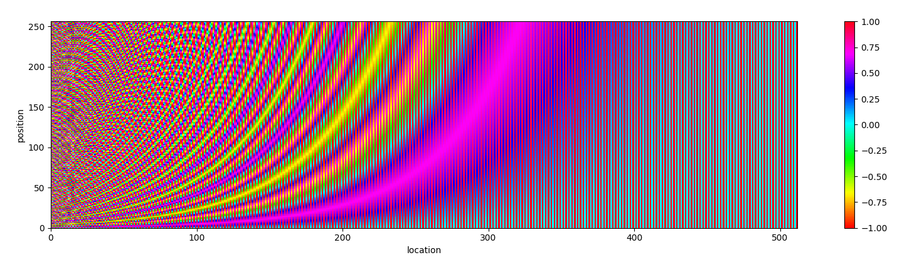

Transformer中Position Embedding的原理与思考
Transformer模型所依赖的Attention本身不具备像RNN一样的天生的对序列位置编码能力，需要借助所谓的Position Embedding来解决位置信息问题。本文总结常见的Position Embedding方案。
印象中，位置编码这个话题，影响中好像是在Google的论文以及Facebook的论文开始关注这个话题。下面我们先来回顾Google最先提出的Self Attention。
Attention的问题
Google 的这篇论文中看到一条挺“吓人”的公式，
由于无法区分token的位置，在Embedding上叠加一个关于位置的Embedding。为什么要这样设计？从模型角度看，可以理解成是模型去偏置的设计方法（CNN对数据的局部性假设，RNN对数据的递归生成假设），即Attention不对文本位置等相关信息做任何假设，让模型的某个模块自己去学习。从这点出发，也可以理解，为什么Transformer的训练往往需要很大的数据集。
Attention层本身不具备区分位置的能力，解决方案：
- 提供绝对位置编码，位置信息由给定位置$i$决定并融入到$\text{token}_i$向量中
- 提供相对位置编码，位置信息由$|i-j|$决定，改变Attention结构使其分辨token间的相对位置
在此之前，我们首先聊聊什么是位置敏感模型？
位置敏感
对于模型$f$，如果更好序列的位置后，模型的输出和原来的不同，即
那么可以称模型$f$是位置敏感的，像RNN、CNN都是位置敏感。而Attention不是，试设想有序列$[x_{1}, \dots, x_{n}]$，无论其元素的顺序如何改变，输入Attention后并作GlobalMaxPooling所获得的词向量都是一样的。这意味着在分类模型下，shuffle一个句子中的元素，不改变模型的分类结果。这说明，在没有位置信息的情况下Attention、Transformer本质上是一个BOW模型。
CNN和RNN的位置信息
RNN本身是递归计算，
如果输入序列的原来的顺序，隐向量序列就改变了。因此递归计算本身就包括位置信息。
CNN做滑动窗口计算，卷积核为3的情况下
我们都知道词向量本身不具备位置信息，序列自身的位置信息的运用需要特定的模型，如RNN。如果模型本身并不具备序列的位置信息处理能力，那么有什么解决办法？解决方案就是引入位置信息。位置信息又可以分为相对位置编码、绝对位置编码。后者是为输入添加位置信息，前者是在Attention基础上改进，使其具有分别不同token位置差别的能力。
可以理解，CNN、RNN都具有相对位置信息编码的能力，在NLU任务中，我个人的实验是在这些模型中添加绝对位置信息编码有少许提升。从另外一个角度来说，既然CNN、RNN具有学习位置信息的能力，那么在Attention模块下游接上CNN、RNN，模型则能获得学习位置信息的能力。不过如果选择RNN，Attention天生的并行性就因为递归计算而弱化，得不偿失。
我们先从绝对位置编码出发。
绝对位置编码
假设有词向量序列，其第$i$个为$\boldsymbol{x}_i$，绝对位置编码为一个依赖$i$的函数，其添加所对应位置的词向量上，即
直观点看，

如果调换了token的位置，该位置的输出由于位置信息的存在就发生改变了，这样Attention就有了间接分辨不同token位置的能力。这样获得的词向量序列就具有位置信息。$\widetilde{\boldsymbol{x}}_{i}$成了新的token序列，输入到Attention模块中，
那么这个$\widetilde{\boldsymbol{x}}_{i}$有哪些计算方法呢？
可训练的绝对位置编码
既然万物皆Embedding，那么位置也能Embedding，一种最直接的做法就是对位置编号$i$也使用Embedding，即
印象中最早是在Facebook的论文Convolutional Sequence to Sequence Learning中提出，这种位置编码只能支持有限长度的文本，因为训练Embedding是需要指定input_dim，那么可支持文本的最长长度就固定下来了。可训练的绝对位置编码对于不同的位置$i$是随机初始化，如同token对应的Embedding一样，因此获得的位置编码本身没有显式的语义。
尽管在 Facebook 的 Convolutional Sequence to Sequence Learning 以 CNN 为主，Attention 为辅解决 seq2seq 问题，但Google 则是使用纯 Attention 解决 seq2seq 问题。两者均使用可训练的绝对位置编码得到很好的效果。这说明，位置Embedding在CNN、Attention中都有一定的作用。
sincos绝对位置编码
在论文Attention Is All You Need提到基于三角函数的绝对位置编码。
Attention 模型并不能捕捉序列的顺序信息，是对位置不敏感（position-insensitive）的模型，也就是说，如果我们把序列打乱，通过模型获得的结果还是一样的。
其中$\boldsymbol{p}_{i}$为，
因为三角函数间可以互相表示，因此可以统一表示为，
sincos绝对位置编码的优势是可以对任意位置$p$编码，没有长度约束。
Google的论文对这两种位置编码都试验，证明没有明显的差别。论文提到，通过参数学习的 position embedding 的效果和采用固定的 position embedding 相差无几，不过后者计算量更少。
在我看来，这是放弃 RNN 进行序列编码必然遇到的问题。我们可以可视化位置编码来直观感受，绘图可视化，

换个风格再次感受一下，

Google 提出的 Position Embedding 有一个有趣的性质，位置 $p+k$ 可以由位置 $p$ 线性表示。这里用到高中的三角函数公式，可参考这里)。
正弦余弦公式，
也就是说位置$\alpha + \beta$的向量可以表示成位置$\alpha$和位置$\beta$的向量组合，这体现出位置的相对性。
代入到 Position Embedding 中，为化简表达，另 $\omega_{i}=\frac{1}{1000^{2i/d_{pos}}}$，
于是可以整理成矩阵形式，
因此位置$PE(p + k)$是可以被$PE(p)$线性表示，以便模型更好地学习位置关系。
根据三角关系，也容易证明，
这就是说明sincos绝对位置编码无法区分前后关系，而文本的方向性在很多任务中都很重要，因此也能理解为什么BERT等Transformer模型不使用该位置编码。
疑问和思考
相加可以理解成普通的数值平均，
去掉分母也可以，下游网络会把这个scale学习回来，例如直接添加LayerNormalization模块。类别思考，相加也可以，向量拼接也可以吧？是的，这也是一种扩展思路。
既然数值平均可以，那么几何平均如何。几何平均的计算如下，
于是有，
甚至我们可以连开方都可以去掉，这样也可以避免$\boldsymbol{x}_{i} \otimes \boldsymbol{p}_{i}$有负元素的情况，
也就是说相乘，逐位置相乘。当然，这里是我自己推想的，并没有做实验验证。对于下游网络来说，本质就是拟合上游数据，既然逐位置求和可行，那么逐位置相乘也是很自然的类比。
不管可训练的绝对位置编码，或者是sincos绝对位置编码，还是逐位置相乘绝对位置编码，都是直接叠加到token对应的向量上，这类位置编码的好处是“即插即用”，不会对原来Attention模块进行干预。
相对位置编码
相对位置编码则不像绝对位置编码一样直观，需要把Attention模块纳入考虑。所谓的相对位置就是对于两个$\text{token}_i, \text{token}_j$，其位置关系需要二元$(i,j)$来决定转变为由$|i-j|$来决定。而二元关系体现在Attention模块内部，因此现展开Attention模块内部计算来看，尝试能否找到把二元关系$(i,j)$转变为由$|i-j|$。
Google最初的Attention模块中，对于位置$i$，Attention模型的输出为，
这里softmax是对$j$维度进行归一化。其位置信息叠加到$x_i$向量内，因此
于是$e_{ij}$的位置信息有二元结构$(i,j)$决定，如何改为由$|i-j|$决定呢？可以看到二元结构$(i,j)$就体现在$x_i, p_j$上。
为引入相对位置，即把二元关系$(i,j)$转变为由$|i-j|$，在论文Self-Attention with Relative Position Representations对Attention模型做修改，称为Relation-aware Self-Attention，它做如下修改，
引入这两个向量$a_{i j}^{K}$和$a_{i j}^{V}$（红色数学符号）是为了让Attention模型获得相对位置感知。此时还没有体会到位置的相对性，关键就是解决$a_{i j}^{K}$和$a_{i j}^{V}$的取值问题，论文的做法是提供$P_V,P_K$两个矩阵，用于位置的取值检索，有
这里$P_K[r]$指矩阵$P_K$的第$r$行，由于$r = \operatorname{clip}(i-j, p_{\text{min}}, p_{\text{max}})$，因此只要$P_K$矩阵的大小有限即可表达任意长度$|i-j|$的相对位置。同理，对于矩阵$P_V$。
此外还有比较知名的相对位置编码：
- Transformer-XL的位置编码
- T5位置编码
- 位置编码
总结
以上我们总结了常见的位置编码方法，总结如下表
| 位置编码 | 内容 | 优点 | 缺点 |
|---|---|---|---|
| 绝对位置编码 | |||
| 相对位置编码 | 处理任意长度文本； | 对Attention模型往往是入侵式； | |
| CNN & RNN | RNN天然具有处理位置关系的能力；CNN的局部性能够处理局部位置关系。 |
实践中发现CNN模型中加入Position Embedding能够加强模型的位置感，有一定的提升。Position Embedding对文本分类有用吗？
除了以上位置编码外，学术界的研究还有很多，如Complex 位置编码，引入复数，不过没有深入研究过。
参考
[1] Self-Attention with Relative Position Representations
[2] Convolutional Sequence to Sequence Learning
转载请包括本文地址：https://allenwind.github.io/blog/11574/
更多文章请参考：https://allenwind.github.io/blog/archives/